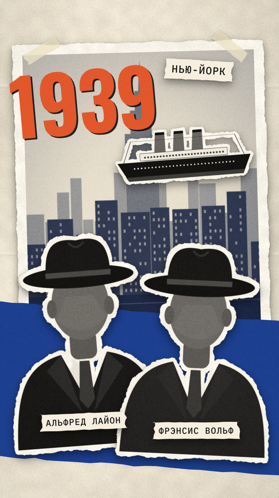
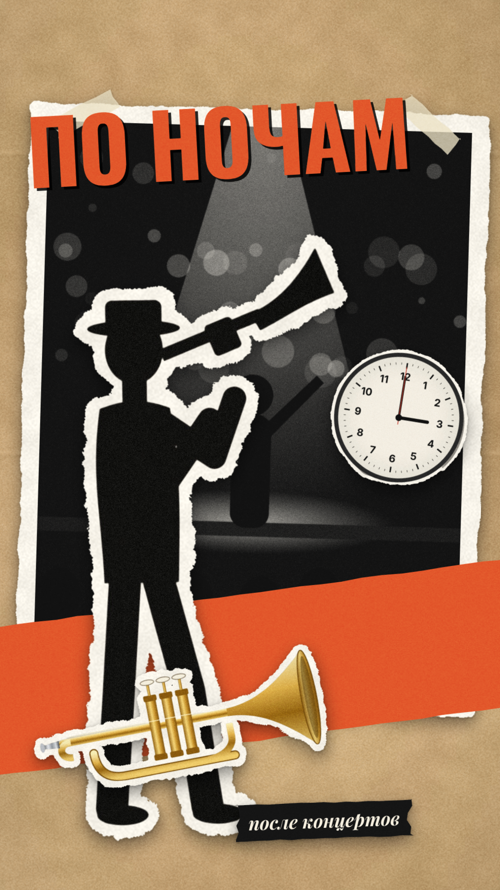
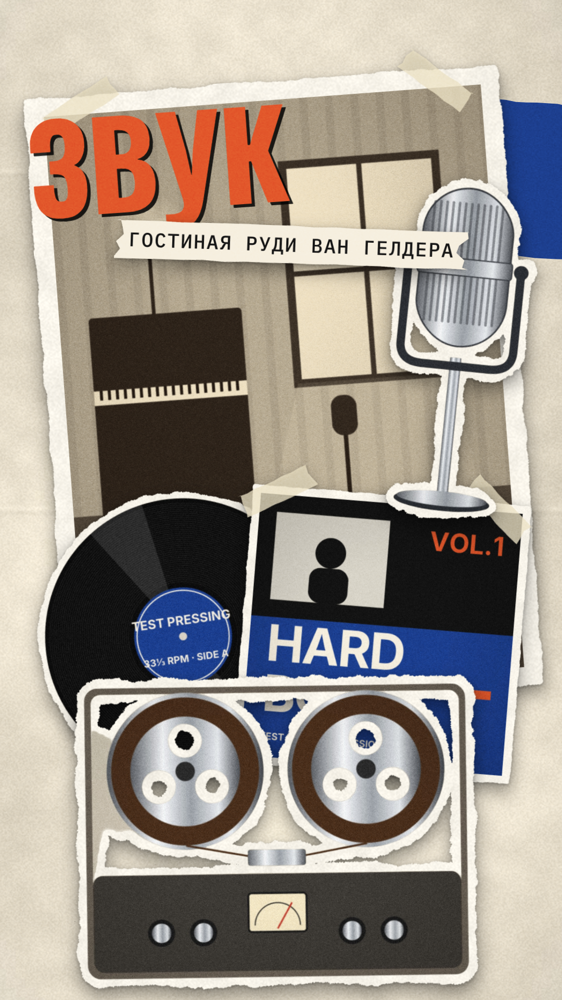
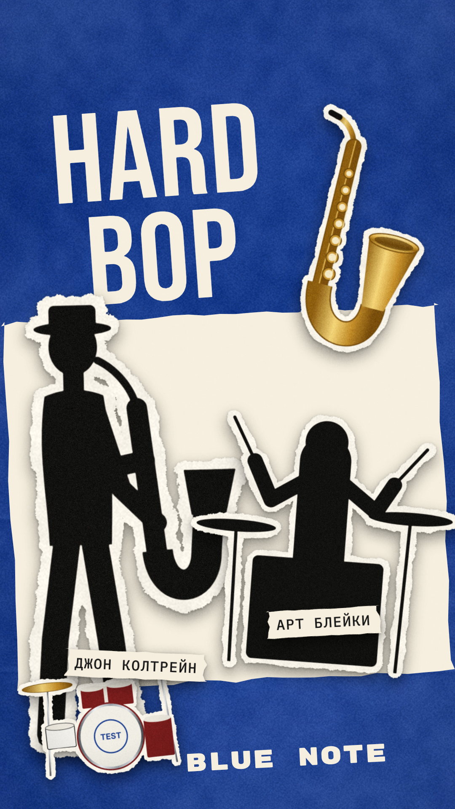

1939 год. Альфред Лайон и Фрэнсис Вольф, друзья из Берлина, начинают в Нью-Йорке джазовый лейбл.
test_placeholder (generated placeholder)test_placeholder (generated placeholder)test_placeholder (generated placeholder)test_placeholder (generated placeholder)Утвердить: cbroll approve blue-note-test 01 · правки — напишите в чат Claude Code

Они записывают музыкантов по ночам, после концертов, и платят даже за репетиции.
test_placeholder (generated placeholder)test_placeholder (generated placeholder)test_placeholder (generated placeholder)test_placeholder (generated placeholder)Утвердить: cbroll approve blue-note-test 02 · правки — напишите в чат Claude Code

Звук рождается в гостиной Руди Ван Гелдера, а обложки становятся образцом графического дизайна.
test_placeholder (generated placeholder)test_placeholder (generated placeholder)test_placeholder (generated placeholder)test_placeholder (generated placeholder)test_placeholder (generated placeholder)Утвердить: cbroll approve blue-note-test 03 · правки — напишите в чат Claude Code

Так Blue Note становится голосом хард-бопа — от Арта Блейки до Джона Колтрейна.
test_placeholder (generated placeholder)test_placeholder (generated placeholder)test_placeholder (generated placeholder)test_placeholder (generated placeholder)Утвердить: cbroll approve blue-note-test 04 · правки — напишите в чат Claude Code